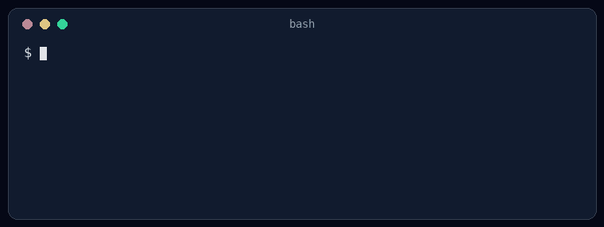

A job service reads a Base64 string, unpickles it, and then checks the owner. The check never gets a chance to matter. This post shows why, with a harmless demo you can run.
This post is for Python developers and code reviewers. You do not need to know what "deserialization" means yet. We start with the idea, then look at why Python's pickle is a special case, then at the fixes people try that do not work, and finally at what does work and what to do if you cannot switch right away. There is a small demo you can run on your own machine. It only prints a line of text.
Serializing means turning an object in memory (a Python dictionary, a job description, a trained model) into bytes or text so you can save it or send it somewhere. Deserializing is the reverse: reading those bytes back into an object.
You do this whenever a service puts a job on a queue, caches an object, or stores a result. Python has several ways to do it. Two matter here:
pickle can rebuild almost any Python object, including instances of your own classes. That convenience is exactly the problem.A backend service takes jobs from other internal applications. The job arrives as a Base64 string (Base64 is just a way to write bytes as text) and the service loads it:
import base64
import pickle
def process_job(encoded_payload):
raw_data = base64.b64decode(encoded_payload)
job = pickle.loads(raw_data)
if job.owner_id != current_user.id:
raise PermissionError("Unauthorized")
execute_job(job)The developer says: "Only authenticated internal applications can submit jobs, and we check that the job belongs to the current user before running it. So there is no security risk." Two claims, and both fall apart for the same reason: the dangerous step happens before either one matters.
A pickle is not a description of data. It is a short program for a tiny virtual machine inside Python. The program can say things like "import this function" and "call it with these arguments". Python's documentation says it plainly: it is possible to construct malicious pickle data which will execute arbitrary code during unpickling, and you should never unpickle data that could have come from an untrusted source.
How does a pickle ask for a function call? When Python pickles an object, it asks the object how to rebuild itself, using a method called __reduce__. That method returns "a callable and its arguments". When the pickle is loaded, Python makes that call. A class we write ourselves can return any callable. Here is a harmless demo:
import pickle
class Probe:
def __reduce__(self):
return (print, ("code ran during pickle.loads",))
blob = pickle.dumps(Probe()) # what an attacker would send
job = pickle.loads(blob) # prints the message, returns None
print(job)Running it prints:
code ran during pickle.loads
NoneThe message appeared while pickle.loads was running. We used print because it is harmless. An attacker uses the same mechanism with a different function, one that starts a program, reads a file or sends your credentials to a server. Nothing special about the application is needed: the attacker does not have to find a weak library in your code or know anything about your job class. Any code that can be imported on the server can be called.
This is also why a pickle is different from "malformed input" that a parser rejects. The loader does not parse it and decide it is bad. It carries out the instructions.
Look at the order of operations again:
In our demo, pickle.loads returned None, so the next line job.owner_id would raise an error. The check did "fail". But the message had already been printed. In a real attack, the harmful action has already happened by the time the check raises an error.
Two small points that people often get wrong:
pickle.loads.Here is the whole thing in one file you can run. It contains the vulnerable function from section 2 (with a stand-in user so it runs on its own) and the payload a sender would build. The payload only prints a line, so it is safe to run:
import base64, pickle
# the vulnerable service
class ApprovedJob:
def __init__(self, owner_id): self.owner_id = owner_id
class User:
id = 7
current_user = User()
def execute_job(job): print("job executed")
def process_job(encoded_payload):
raw_data = base64.b64decode(encoded_payload)
job = pickle.loads(raw_data)
if job.owner_id != current_user.id:
raise PermissionError("Unauthorized")
execute_job(job)
# the sender's side: build a payload, Base64 it, submit it
class Probe:
def __reduce__(self):
return (print, ("[PoC] this ran inside pickle.loads, before any check",))
payload = base64.b64encode(pickle.dumps(Probe())).decode()
try:
process_job(payload)
except Exception as e:
print("service answered with an error:", type(e).__name__)Output:
[PoC] this ran inside pickle.loads, before any check
service answered with an error: AttributeError
Read the order. The [PoC] line came first, from inside pickle.loads. The error came afterwards, because the object that came back was not a job. From the outside the request simply failed, but the sender's code had already run. To turn this into a real attack, the sender would swap print for a more harmful function. Nothing else about the payload changes.
This is the other half of the developer's argument. There are two different ideas here:
The first does not give you the second. Ways a malicious pickle can still arrive from an authenticated sender:
Authentication reduces who can try. It does not make the bytes safe. A field inside the message saying {"producer": "trusted-service"} proves nothing either, because the sender writes it.
The developer agrees pickle is risky, but a rewrite is expensive, so they add two controls:
raw_data = base64.b64decode(encoded_payload)
if len(raw_data) > 1024 * 1024:
raise ValueError("Payload too large")
job = pickle.loads(raw_data)
if type(job) is not ApprovedJob:
raise ValueError("Invalid job type")
if job.owner_id != current_user.id:
raise PermissionError("Unauthorized")
execute_job(job)"We added a size limit and an exact type check. An attacker cannot pass an unexpected object anymore." Both checks still run after the dangerous call (or, for the size limit, have nothing to do with it). Worse, the type check can pass. A pickle is a sequence of steps. It can call a function, throw the result away, and then build a perfectly ordinary ApprovedJob at the end. I tested this with a hand-written pickle that prints a line and then returns a real ApprovedJob:
side effect runs first
type check passes: True owner_id: 7So "the result is an ApprovedJob" says nothing about what happened on the way. This is the main rule of the whole topic: any check on the result of a deserializer is too late if the deserializer can run code. You cannot look at a pickle's resulting type without running it, and running it is the danger.
Python lets you write your own unpickler and override a method called find_class, which is called whenever the pickle asks for a class or function. You can refuse everything not on a short list. The Python docs show this, and also tell you to be careful about what you allow. It reduces the attack surface, but it is hard to get right: any allowed class or function that can be abused is a way in, and a later code change can add one without anyone noticing. OWASP says the same, that filtering "does not make arbitrary untrusted deserialization safe". Treat it as an extra layer, not the fix.
There is no "safe mode" for pickle.loads on untrusted data. The standard library does not offer one.
If you have seen deserialization bugs in Java or PHP, the basic mistake is the same: the bytes decide what objects get created. But what an attacker can do with that differs, and it explains why pickle is the easiest of the three to exploit.
Python pickle | Java ObjectInputStream | PHP unserialize() | |
|---|---|---|---|
| What the bytes contain | Instructions: "import this function, call it with these arguments" | Class names and field values to rebuild | Class names and property values to rebuild |
| How code runs | Python calls the function the bytes name, directly | Methods of the classes being rebuilt (such as readObject) run automatically | Magic methods such as __wakeup() or __unserialize() run automatically, and destructors can run when objects are cleaned up |
| What the attacker needs | Nothing special. Any function that can be imported on the server will do, and the standard library is always there | A chain of classes already on the classpath (a "gadget chain") whose methods add up to something harmful | A chain of classes the application already loads or can autoload (sometimes called a property-oriented chain) |
| Built-in limit | None that is safe. A custom find_class allowlist is possible but fragile | Serialization filters (ObjectInputFilter, JDK 9 and later, with some backports) can allowlist classes | The allowed_classes option can restrict which classes are created |
The main difference is in the second and third rows. In Java and PHP the attacker cannot bring new code. They can only chain together code you already shipped, so a working exploit depends on which libraries and versions your application includes. That is why public tools that bundle known chains exist (ysoserial for Java, PHPGGC for PHP), and why upgrading or removing a library sometimes closes a specific hole without fixing the design.
In Python, pickle skips that step. The stream can name a function directly, so the attacker does not need a particular library to be present. There is nothing to "hunt for", which makes the attack simpler.
The defenses line up too. Allowlists (ObjectInputFilter in Java, allowed_classes in PHP, find_class in Python) reduce the risk, and none of the three language documentation sets promises they make untrusted input safe. The PHP manual says not to pass untrusted input to unserialize() whatever the allowed_classes value is, and to use JSON instead. The advice from section 8 holds in all three languages: for data that crosses a trust boundary, use a data-only format with a strict schema.
Use a format that can only describe data, check its shape, and decide yourself which code runs:
import json
JOB_HANDLERS = {
"resize_image": resize_image,
"generate_report": generate_report,
}
def process_job(raw_payload, current_user):
job = json.loads(raw_payload) # only dicts, lists, strings, numbers
handler = JOB_HANDLERS.get(job.get("type")) # the sender picks a name, you pick the code
if handler is None:
raise ValueError("Unsupported job type")
params = validate_params(job["type"], job.get("params", {})) # your schema check
if not can_run_job(current_user, job["type"], params): # your authorization check
raise PermissionError("Forbidden")
return handler(**params)validate_params and can_run_job are yours to write. They must check types, ranges, lengths and who is allowed to run what. What matters about this design:
"generate_report". Your code looks that name up in a fixed table.JSON is still not magic: a huge or deeply nested document can use a lot of memory, so set size and depth limits, and keep the handler list short. But the failure is a rejected request, not code running on your server.
The same argument appears in a message-queue form. The consumer reads messages from a Kafka topic and unpickles them. The manager says: "Only authenticated internal services can publish, and outsiders cannot reach the topic, so pickle is safe."
Kafka access controls decide who can write to a topic. They do not say anything about what the bytes do. The attack paths from section 5 apply unchanged: a compromised publisher, a stolen publisher credential, or a publisher that passes attacker-influenced bytes along. And the damage can be larger than with one HTTP request, because one malicious message can be read by every consumer group on the topic.
Sometimes the migration cannot happen before launch. In that case, be honest that you are managing a risk, not removing it. These are the controls I would put in first, in order:
hmac for this. Two limits to remember: a valid signature shows who made the message, not that it is safe, so a compromised producer with the key still gets through; and the key must be managed properly, not hard-coded.When is pickle acceptable at all? When the bytes are created by your own code, stored or sent where an attacker cannot write or change them, and loaded only by an isolated process with limited rights. A local cache your own application writes and reads is a typical example. "Our network is internal" and "senders are logged in" do not meet that bar.
Only test systems you own or have permission to test, in an isolated environment.
Probe class in section 3, one that only records or prints an event.ApprovedJob. If the type check passes, you have shown that the check cannot be relied on.pickle.loads, pickle.load, pandas.read_pickle, joblib.load, shelve, torch.load, yaml.load without a safe loader, and similar calls in libraries. Many of these rely on pickle or similar mechanisms internally, so check each library's documentation, especially for files such as models that come from outside.pickle, loading runs instructions.pickle.loads on bytes someone else controls can run any code available to the server. Checks after the call, including type and owner checks, are too late.